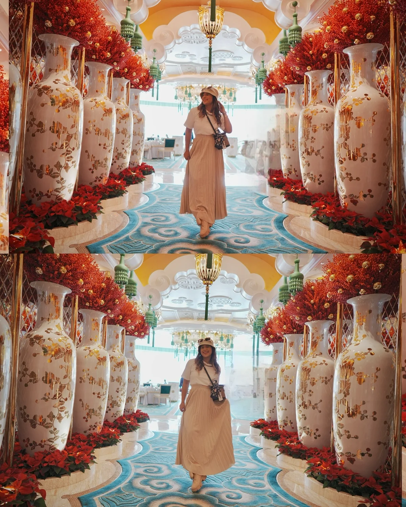
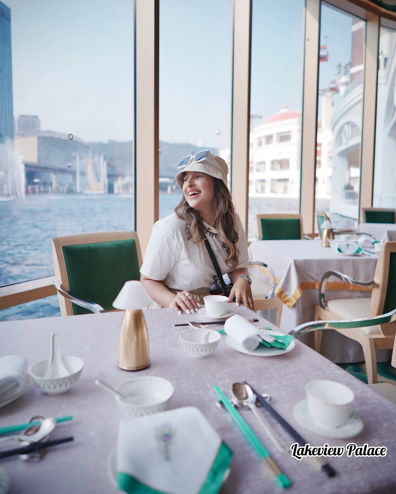
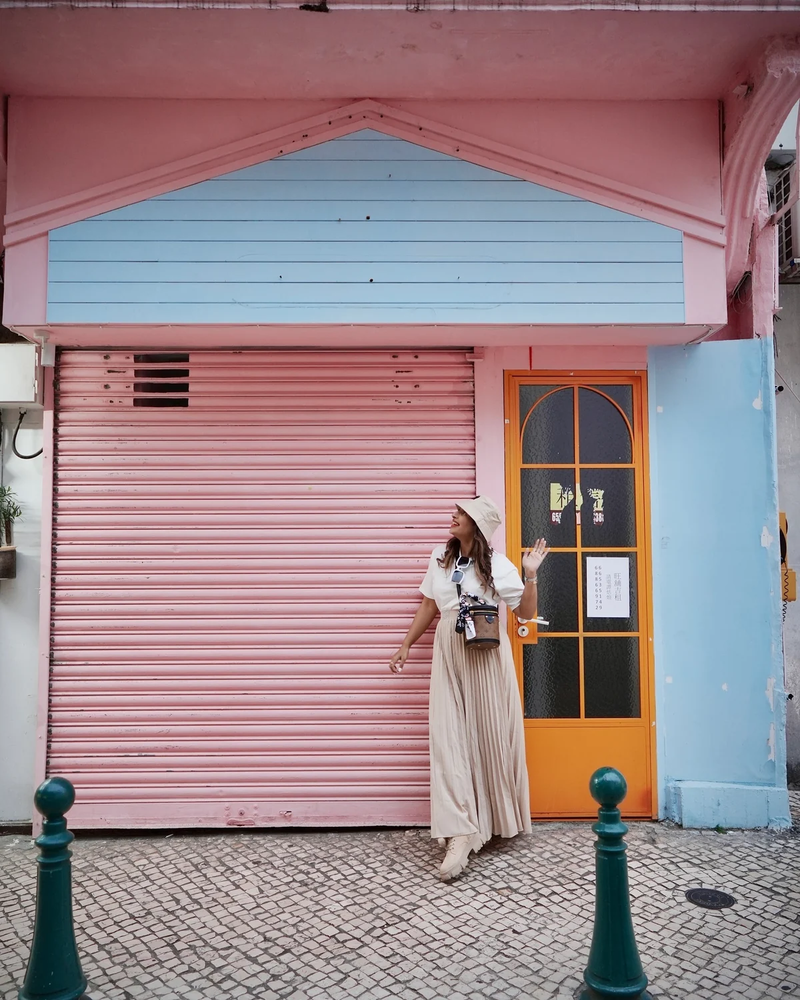
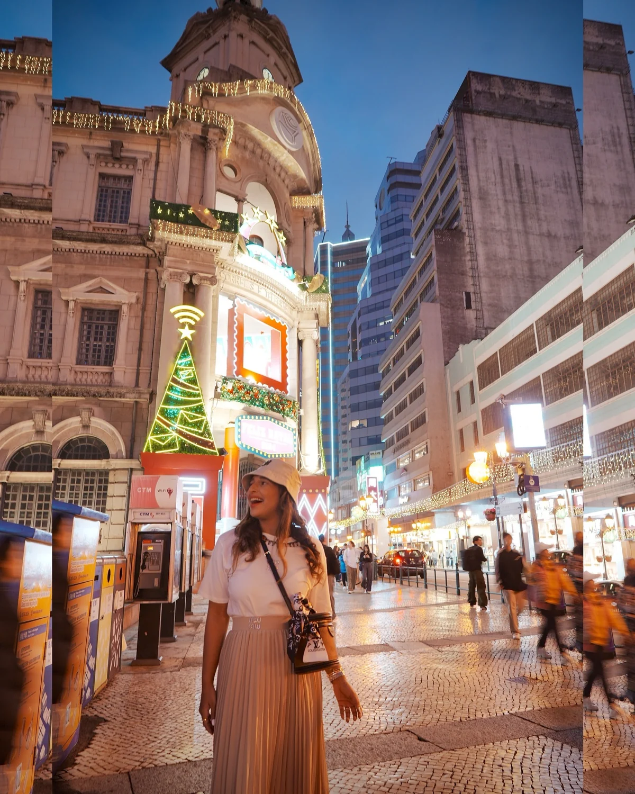
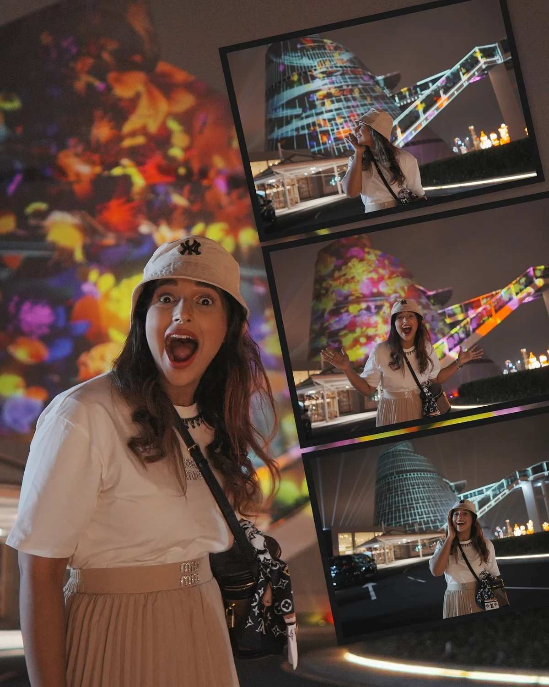
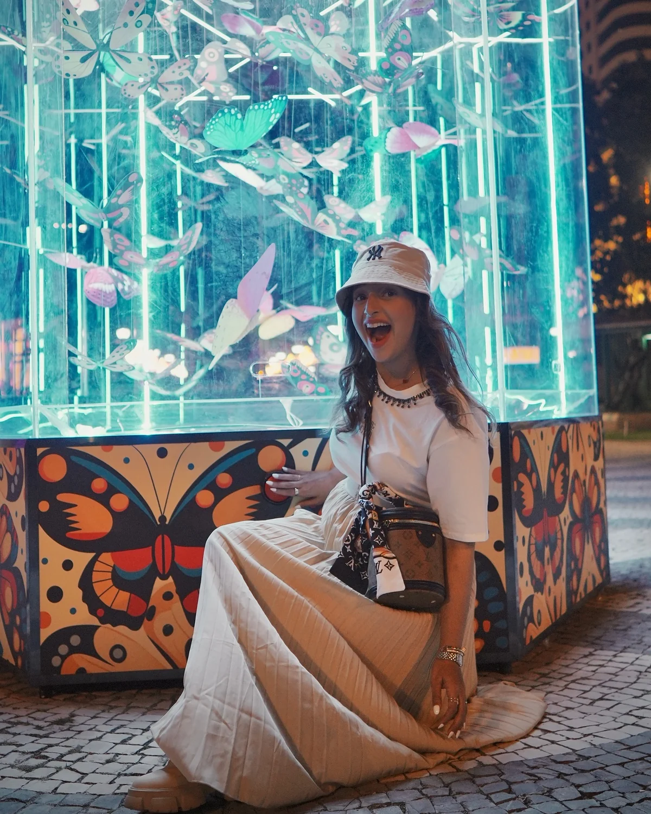
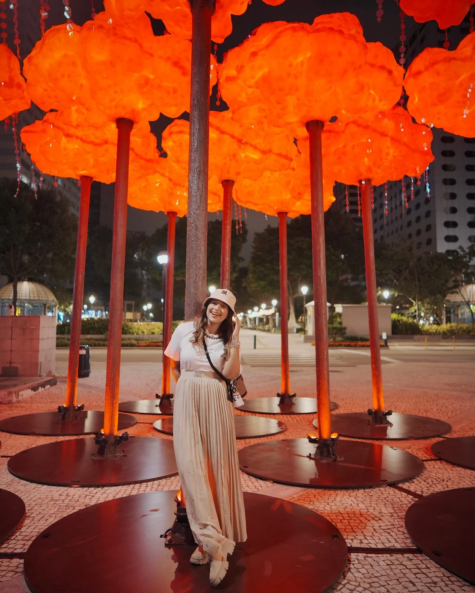
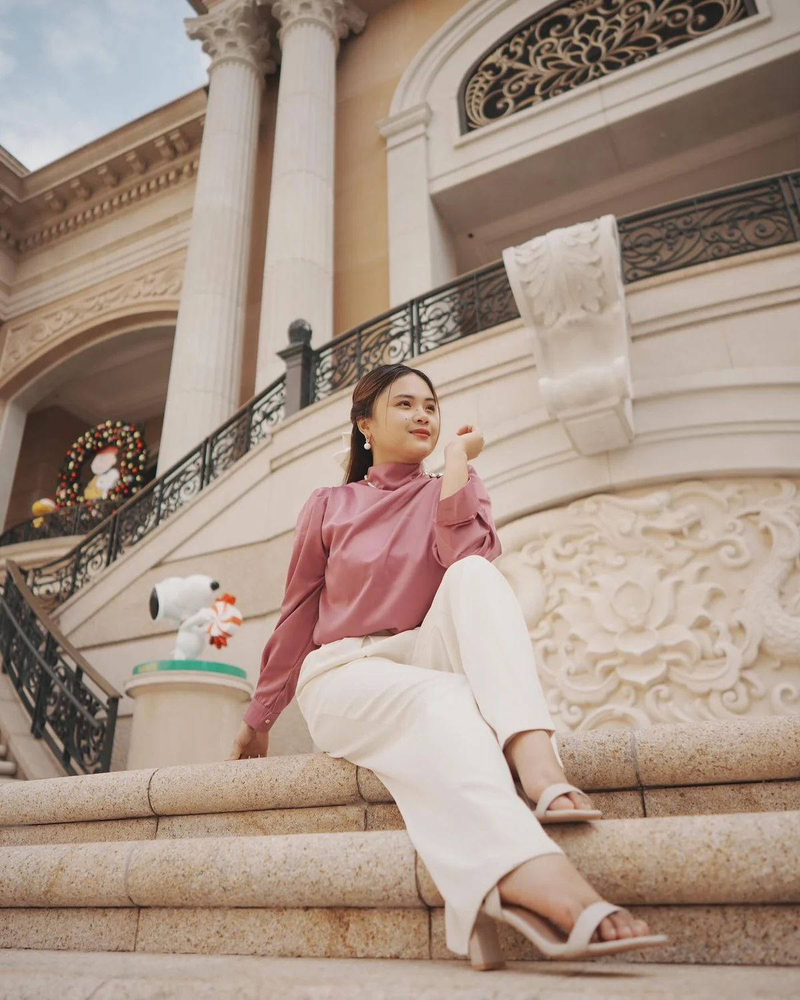
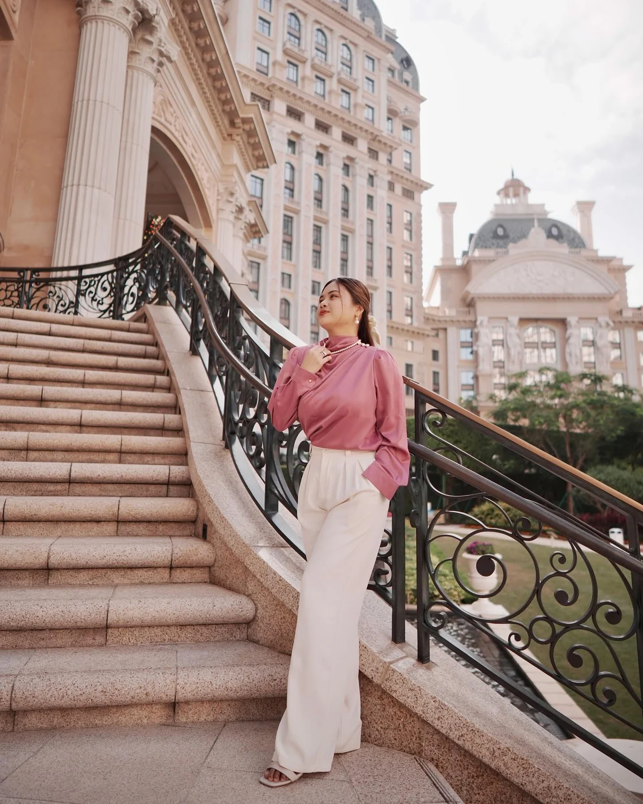
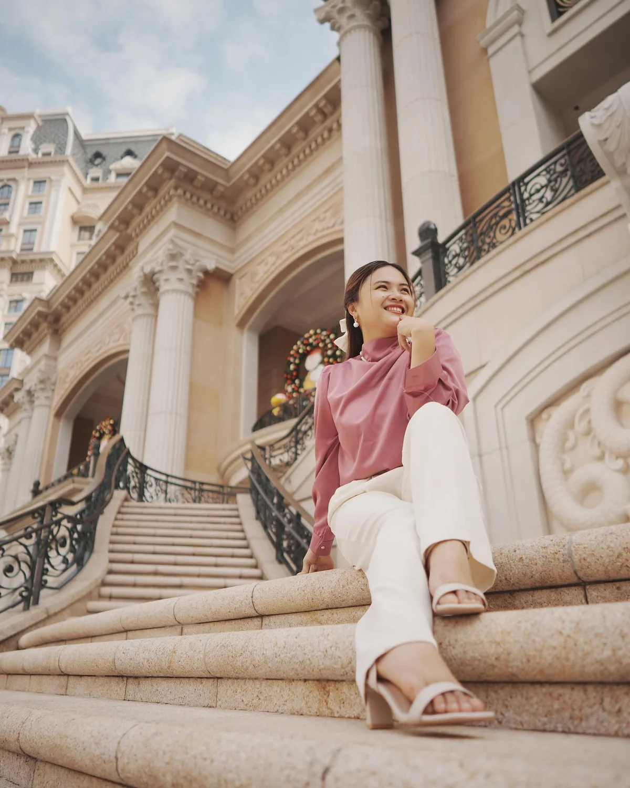

澳门葡京人餐饮礼遇
0:47
 MaxYourWay
MaxYourWay永利皇宫 · 澳门街景与灯光节








新濠影汇 · 澳门烟花




澳门城市与大赛车
粉丝数核对日期：2026.11.10–12
九条工厂探访完整版，涵盖生产工艺、产品装配及供应链现场。
九条精选完整版，涵盖意大利目的地、生活方式与空间内容。
为 MITCO 的跨境业务提供持续的社媒内容策划与制作，围绕意大利房产、教育及进出口业务，结合当地生活与实地项目，制作面向中外受众的品牌内容。合作涵盖双语选题及脚本、远程拍摄指引、剪辑调色、图文制作及多平台发布安排。
小红书笔记《阿布鲁佐酒庄｜一串葡萄的酿酒旅程》
小红书笔记《在阿布鲁佐骑行，看到的远不止风景》
小红书笔记《在阿布鲁佐，好好吃饭就是生活本身》
小红书笔记《带围合庭院与全景露台的阿兰诺265㎡石屋》
小红书笔记《推门见峡谷，转身入烟火的意大利山城》
九条澳门康礎物理治疗科普短片，保留成片里的繁体片名与原声。